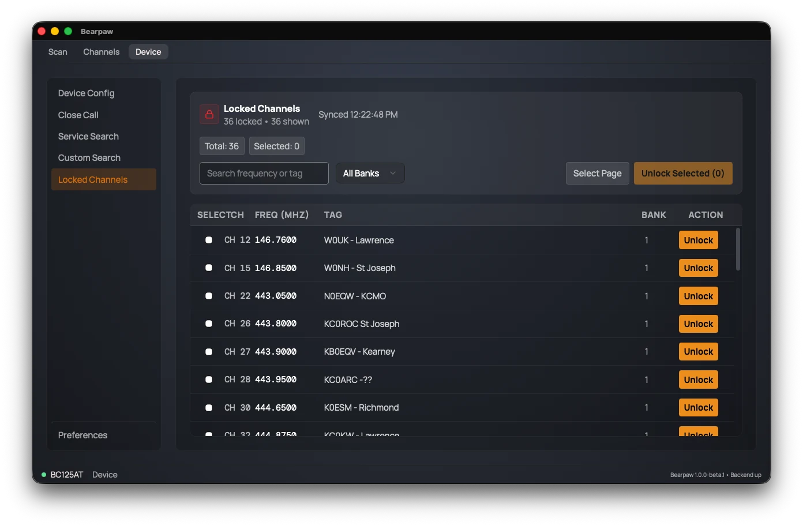

Locked Channels
A locked-out channel is one you've told the scanner to skip while scanning. This page lists every currently locked-out channel and lets you unlock them.

The list is read from the scanner when you open this page, with a timestamp showing when.
- Search and filter by bank to narrow the list.
- Select channels with their checkboxes, then Unlock Selected to clear them in a batch.
- Or use each row's own Unlock button to clear just that one.
Unlocking brings a channel you'd previously skipped back into the scan rotation. (To lock a channel out, use the L/O button on the Scan tab or the Lockout switch when editing the channel.)